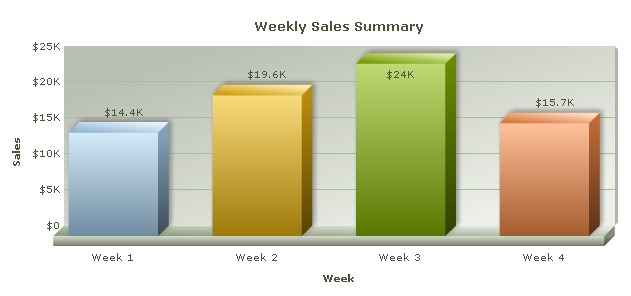

| Changing chart size |
|
In our previous example, we saw how to change chart type. Here, we will see how to change chart dimensions (size). Changing chart's width and height is as easy as changing the chart type. You can set the dimensions of the chart either in terms of pixels or specify the percentage width and height of the chart relative to its container (a DIV or any other HTML element). If the size is specified in pixels, then the chart's dimensions remain constant irrespective of the size of the container. However, if the width and height of the chart is set as percentage of the container, then the chart automatically adapts itself to the change in size of the container. Code examples discussed in this section are present in Download Package > Code > MyFirstChart folder. |
| Setting width and height in pixel values |
|
To change the width and height, all you have to do is provide the desired width and height in pixels (without appending px at end of it). Let's see how the change is incorporated in the HTML code. <html>
<head>
<title>My First chart using FusionCharts XT - change size</title>
<script type="text/javascript" src="FusionCharts/FusionCharts.js"></script>
</head>
<body>
<div id="chartContainer">FusionCharts XT will load here!</div>
<script type="text/javascript"><!--
var myChart = new FusionCharts( "FusionCharts/Column3D.swf",
"myChartId", "600", "400", "0" );
myChart.setXMLUrl("Data.xml");
myChart.render("chartContainer");
// -->
</script>
</body>
</html>
See it live! |
| In the above code, we have changed the chart's width to 600 pixels and height to 400 pixels. The chart now looks like this: |
| Setting width and height in percent values |
You can also set the width and height of the chart in terms of percentage. The chart will automatically adjust its dimensions with respect to the parent HTML container element. Let's see how this is done in HTML: |
<html>
<head>
<title>My First chart using FusionCharts XT - change size in percentage</title>
<script type="text/javascript" src="FusionCharts/FusionCharts.js"></script>
</head>
<body>
<div id="chartContainer" style="width:800px; height:300px;">
FusionCharts XT will load here!</div>
<script type="text/javascript"><!--
var myChart = new FusionCharts( "FusionCharts/Column3D.swf",
"myChartId", "80%", "100%", "0" );
myChart.setXMLUrl("Data.xml");
myChart.render("chartContainer");
// -->
</script>
</body>
</html>
See it live! |
| In the above code, we have set the width of the chart to 80% and height to 100%. The DIV with id chartContainer is the container element of the chart. Hence, the dimensions of the chart will be derived from the dimensions of the chartContainer Div. In this example, we have set the width of the DIV to 800 pixels and its height to 300 pixels. So, the chart's size is automatically set to 640x300. The chart will look like the image below: |
|  |
In certain cases, if the HTML container element itself has not acquired proper width or height (due to error in rendering by browser), the chart might look squeezed, or it may not render in the first place. If this happens, then you'll have to specify the chart's dimensions in pixels. |
| Dynamic resize feature of charts |
|
Starting FusionCharts XT, charts can dynamically resize itself when the parent container resizes. For this you will need to :
Whenever the container element resizes, the chart will also dynamically resize itself instantly. In the example below, we have created a very basic sample where the chart will fill up the whole of web browser's space and if the browser's size is changed, the chart will resize itself. Note, that the width and height of the BODY and DIV elements are set using CSS. |
<html>
<head>
<title>My First chart using FusionCharts XT
- Using dynamically re sizable chart</title>
<script type="text/javascript" src="FusionCharts/FusionCharts.js"></script>
</head>
<body style="height:100%;">
<div id="chartContainer" style="height:100%;" >
FusionCharts XT will load here</div>
<script type="text/javascript"><!--
var myChart = new FusionCharts("FusionCharts/Area2D.swf",
"myChartId", "100%", "100%", "0");
myChart.setXMLUrl("LargeData.xml");
myChart.render("chartContainer");
// -->
</script>
</body>
</html>
See it live! |
|
In the above code we have:
|